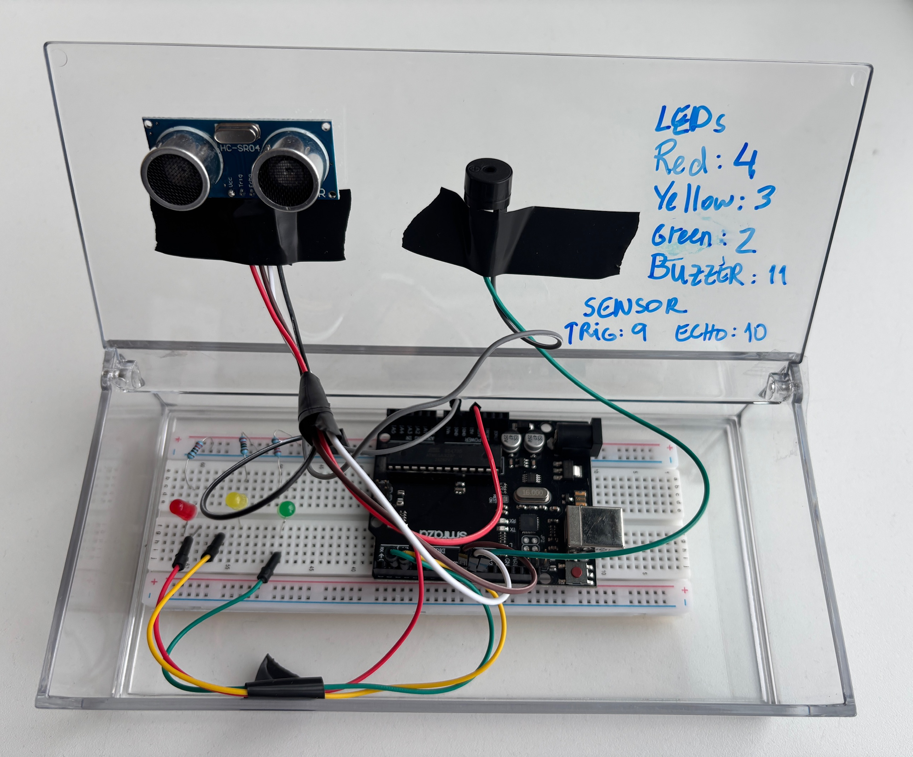

Circuit Diagram
The ultrasonic sensor measures distance; the Arduino activates LEDs and the buzzer according to distance thresholds.

Course: TECH 117 (Computer Engineering Technology, Fall 2025)
Instructor: Ph.D. Ana Rodrigues
Team Members:
This project uses an Arduino Uno, an HC-SR04 ultrasonic sensor, a passive buzzer, and red/yellow/green LEDs to provide proximity-based alerts, similar to automotive collision detection systems.
The ultrasonic sensor measures distance; the Arduino activates LEDs and the buzzer according to distance thresholds.
| Item | Qty | Unit Price (CAD) | Subtotal (CAD) | Source |
|---|---|---|---|---|
| Arduino Uno Rev3 | 1 | $54.00 | $54.00 | Arduino Store |
| HC-SR04 Ultrasonic Sensor | 1 | $7.99 | $7.99 | SparkFun |
| Breadboard | 1 | $12.32 | $12.32 | SparkFun |
| LEDs (Red, Yellow, Green) | 6 | $0.48/0.76/1.04 | $2.28 | digikey |
| 220 Ω Resistors | 6 | $0.03 | $0.09 | digikey |
| Humidity & Temperature Sensor | 1 | $5.99 | $5.99 | canadarobotix |
| Jumper Wires | 1 set | $3.50 | $3.50 | SparkFun |
| Estimated Total | $41.64 | — | ||
The following image shows the assembled prototype on a breadboard.
The following Arduino code controls the system, lighting LEDs and activating the buzzer based on distance readings from the HC-SR04 sensor.
// Collision Warning System with Distance Sensor (HC-SR04)
// Author: Ana Rodrigues
// Oct 2, 2025
// Object is farther than 50cm: Green LED lights up
// Object is closer than 50 cm, but more than 10cm away: Yellow LED lights, buzzer plays 300Hz tone
// Object is closer than 10cm: Red LED lights up, buzzer plays 500Hz tone
//LED pins
const int greenLED = 2;
const int yellowLED = 3;
const int redLED = 4;
// Ultrasonic sensor pins
const int trigPin = 9;
const int echoPin = 10;
// Passive buzzer pin
const int buzzer = 11;
void setup() {
pinMode(greenLED, OUTPUT);
pinMode(yellowLED, OUTPUT);
pinMode(redLED, OUTPUT);
pinMode(trigPin, OUTPUT);
pinMode(echoPin, INPUT);
Serial.begin(9600);
}
void loop() {
// Measure distance
digitalWrite(trigPin, LOW);
delayMicroseconds(2);
digitalWrite(trigPin, HIGH);
delayMicroseconds(10);
digitalWrite(trigPin, LOW);
long duration = pulseIn(echoPin, HIGH);
long distance = duration * 0.034 / 2;
Serial.print("Distance: ");
Serial.print(distance);
Serial.println(" cm");
//Error in measurement:
if (distance <= 0)
return;
//Too close:
if (distance <= 10) {
digitalWrite(greenLED, LOW);
digitalWrite(yellowLED, LOW);
digitalWrite(redLED, HIGH);
tone(buzzer, 500); // Play 500Hz tone
return;
}
//Midrange:
if (distance <= 30) {
digitalWrite(greenLED, LOW);
digitalWrite(yellowLED, HIGH);
digitalWrite(redLED, LOW);
tone(buzzer, 300); // Play 300Hz tone
return;
}
//Normal status:
digitalWrite(greenLED, HIGH);
digitalWrite(yellowLED, LOW);
digitalWrite(redLED, LOW);
noTone(buzzer); // stop buzzer
delay(100);
}
The system effectively demonstrates distance-based alerting using Arduino. It’s affordable, educational, and sustainable through reusable components.
The following external resources and example projects demonstrate related Arduino applications using ultrasonic distance sensors, passive buzzers, and multicolour LEDs: